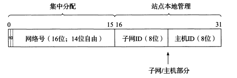

[TCP/IP详解]:Internet地址结构
1. IP地址的表示
IPV4
IPV4地址为32位，通常采用点分十进制表示
IPV6
IPV6地址为128位，长度是IPV4的四倍，传统的表示方法是将其分为8 *4个16进制数
其中，还有一些简写方式，在RFC[5952]中已经将这些作为强制要求 :
前导0简写
5f05:2000:80ad:5800:0058:0800:2023:1d71——->5f05:2000:80ad:5800:58:800:2023:1d71
全0块省略, 使用::代替
但是如果有多处全0块只能省略一处，并且只能用于压缩数最大的地方
0:0:0:0:0:0:0:1 ————->::1
a到f的16进制数小写
2. IP地址结构
单播: 目的地址为单一目标
在IPV4中: 0.0.0.0~255.255.255.255为单播地址
下面将介绍一下IP地址的历史演变
分类寻址
最初，每个IP地址都被分为了网络号和主机号两个部分，网络号用于标识接口使用的IP地址在哪个网络中可以被发现, 主机号则指明了网络中的某个主机，最开始，IP地址被划分为5大类
其中， A, B, C类均用于单播地址
地址划分表
子网寻址
随着局域网LAN的发展，IP地址开始出现一个问题，那就是很难为新接入Internet的网络分配一个网络号，因为网络号太少了，后来，人们使用子网寻址解决了这个问题
基本思想
在一个站点(拥有网络号)内部划分更多子网，由站点管理员进行统一管理
实现
站点可以将原理IP地址中的主机部分进行细分，分成一个子网字段以及主机字段

当外来站点需要访问该站点时，所有的流量将会经过边界路由器，边界路由器再将这些流量分配到不同的子网
注: 对于外部站点而言，子网是透明的，其根本不知道子网的存在, 只有划分子网的主机和路由器直到子网的结构
子网掩码
边界路由器通过子网掩码来将流量分配到他们对应的子网当中, 子网掩码的位数与IP地址位数相同，也有着一些简写方法
确定一个IP地址所属子网的过程
该过程非常简单，只需要将IP地址与子网掩码进行与运算即可
在该例子当中，128.32.1.14属于子网128.32.1/24 , 其中128.32.1是表示子网， /24表示掩码的长度为24bit , 而掩码的长度同时也就是子网的网络号的长度
可变长度子网掩码(VLSM)
在上面的例子当中，子网掩码只有一个，所以划分出的子网的数目固定，每个子网中的主机数目也是固定的
但有时，需要更加精细化的操控某个子网中的主机数目，因此，出现了可变长度子网掩码(VLSM), 这样可用于不同的子网容纳不同数量的
主机
广播地址
在IPV4地址中，有一个特殊地址被用作子网广播地址，子网广播地址的主机字段全为1
定向广播
当一个广播数据报通过Internet到达了目标子网，会将其内容发送给所有当前子网的主机
该技术很容易被恶意利用来进行网络攻击，因此被禁止使用
本地网络广播
特殊用途地址
255.255.255.255被保留为本地广播地址，它不会被路由器转发，而是会将其内容发送给当前子网中的其他所有主机
IPV6中没有广播地址，只有组播地址
3. CIDR
为了帮助缓解IPV4地址的压力，人们开始使用无类域间路由（Classless Inter-Domain Routing，CIDR）, 该技术基于VLSM, 它不区分 A 类、B 类、C 类地址，而是使用CIDR前缀(CIDR掩码)的值指定地址中作为网络ID的位数
之前所看过的128.32.2.128/25其实就是CIDR表示法，/25表示网络号的位数是25
CIDR还是用了一种被称为路由聚合的技术，该技术可以有效减少路由表中的条目
因此, CIDR技术如今正被广泛使用
4. 公有IP与私有IP
在 A、B、C 分类地址，实际上有分公有 IP 地址和私有 IP 地址
私有IP
平时使用的IP地址，基本上都是私有IP, 即该IP地址只在组织内部有效，不同组织的私有IP地址甚至可以重复
私有IP由组织内部的人员管理
公有IP
公有IP地址是由统一的机构分配的，并且公有IP地址在全世界范围内唯一
公有IP由ICANN进行管理，中⽂叫「互联⽹名称与数字地址分配 机构」，IANA 是 ICANN 的其中⼀个机构，它负责分配互联⽹ IP 地址，是按州的⽅式层层分配
其中，在中国是由 CNNIC 的机构进⾏管理，它是中国国内唯⼀指定的全局 IP 地址管理的组织
本博客所有文章除特别声明外，均采用 CC BY-SA 4.0 协议 ，转载请注明出处！